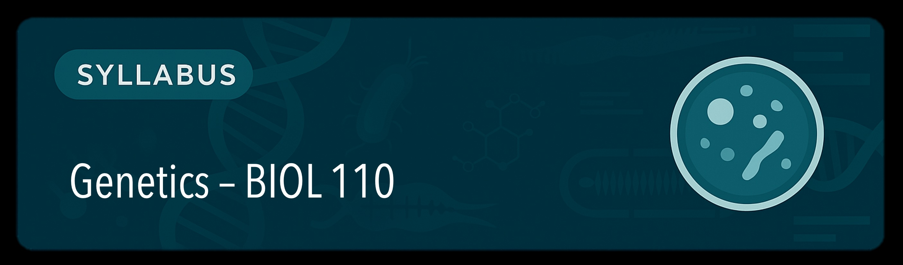

Welcome to Genetics! This course will help you understand how traits are inherited, how genes function, and how we use this knowledge to tackle real-world problems. We focus on thinking like geneticists, working through cases, data, and lab work together.
Many concepts will be introduced through SimBio simulations, which place you in real-world scenarios and help you uncover key ideas through guided inquiry.
Labs are hands-on, team-based, and interconnected with lecture topics. You’ll complete two major investigations: a fruit fly gene-mapping project and a synthetic biology experiment using the pClone system.
AIDA is your AI tutor. She helps you reason through problems, reflect on your learning, and prepare for challenges. You'll use AIDA in most reflections, team activities, and pre-lab analysis.
Assignments are graded using the ESPN scale:
| Category | Weight | Description |
|---|---|---|
| 🧪 Labs & Projects | 30% | Fly Lab, pClone project, SimBio-based write-ups |
| 👥 Team Challenges | 25% | iRAT/tRAT quizzes, collaborative problem-solving |
| 📄 Reflections & AIDA | 20% | Weekly reflections, AIDA work, biweekly Achieve Practice Sets aligned with textbook readings |
| 💬 Participation | 15% | Discussions, in-class engagement, peer feedback |
| 📁 Portfolio & Final | 10% | Final Portfolio & Reflection |
Each 2-week unit follows the QUEST cycle. The table below outlines weekly themes, activities, and assessments, with textbook readings to guide your study.
| Week | Topic & Focus | Key Activities | Major Assessment | Recommended Reading |
|---|---|---|---|---|
| 1 | Foundations of Genetics & Inheritance | SimBio: Mendelian Pigs Case: The Riddle of Dominance |
Intro Reflection | Pierce Ch. 3 |
| 2 | Mendelian Inheritance & Meiosis |
Fly Lab Launch Achieve Practice – Unit 1: Inheritance Patterns |
Team Challenge #1 (RAT) | Pierce Ch. 2, 3, 7 |
| 3 | Extensions of Mendelian Genetics | SimBio: Meiosis Explored Blind Mice Case Study |
Write-Up 1 | Pierce Ch. 5 |
| 4 | Linkage & Mapping |
SimBio: DNA Explored Achieve Practice – Unit 2: Meiosis & Mapping |
Team Challenge #2 (RAT) | Pierce Ch. 7 |
| 5 | Pedigrees, Traits, Genetic Testing | Transcription & Translation Module AIDA Reflection |
Portfolio Check-In | Pierce Ch. 6, 13 |
| 6 | Gene Expression & Regulation |
SimBio: Gene Regulation Achieve Practice – Unit 3: Gene Expression |
Team Challenge #3 (RAT) | Pierce Ch. 16, 17 |
| 7 | Mutations & Biotechnology | CRISPR Ethics Case Data Analysis |
Write-Up 2 | Pierce Ch. 18, 19 |
| 8 | Bioinformatics & Molecular Tools |
Launchpad + pClone Analysis Achieve Practice – Unit 4: Bioinformatics & Regulation |
Team Challenge #4 (RAT) | Pierce Ch. 20 |
| 9 | Genetic Variation & Population Genetics | Ancestry Toolkit Student-Led Projects |
Write-Up 3 | Pierce Ch. 23, 24 |
| 10 | Reflection & Integration |
Portfolio Assembly Achieve Practice – Unit 5: Genetic Complexity |
Team Challenge #5 (RAT) Final Portfolio |
None (review/synthesis) |
You can message me on Canvas or email anytime. I want this course to support your learning and your goals. Let me know how I can help.